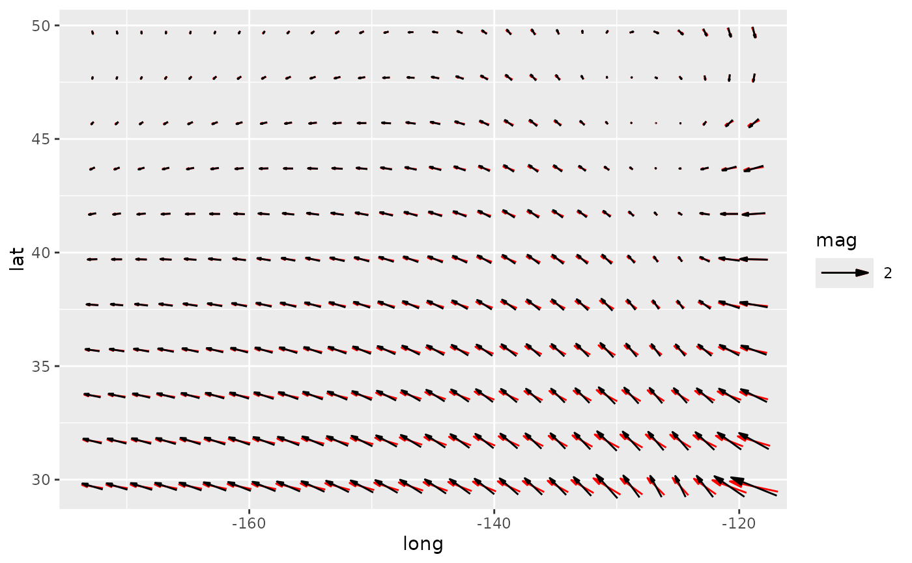

Parametrization of ggplot2::geom_segment either by location and displacement
or by magnitude and angle with default arrows. geom_arrow() is the same as
geom_vector() but defaults to preserving the direction under coordinate
transformation and different plot ratios.
geom_arrow(mapping = NULL, data = NULL, stat = "arrow", position = "identity", ..., start = 0, direction = c("ccw", "cw"), pivot = 0.5, preserve.dir = TRUE, min.mag = 0, skip = 0, skip.x = skip, skip.y = skip, arrow.angle = 15, arrow.length = 0.5, arrow.ends = "last", arrow.type = "closed", arrow = grid::arrow(arrow.angle, unit(arrow.length, "lines"), ends = arrow.ends, type = arrow.type), lineend = "butt", na.rm = FALSE, show.legend = NA, inherit.aes = TRUE) geom_vector(mapping = NULL, data = NULL, stat = "arrow", position = "identity", ..., start = 0, direction = c("ccw", "cw"), pivot = 0.5, preserve.dir = FALSE, min.mag = 0, skip = 0, skip.x = skip, skip.y = skip, arrow.angle = 15, arrow.length = 0.5, arrow.ends = "last", arrow.type = "closed", arrow = grid::arrow(arrow.angle, unit(arrow.length, "lines"), ends = arrow.ends, type = arrow.type), lineend = "butt", na.rm = FALSE, show.legend = NA, inherit.aes = TRUE)
Arguments
| mapping | Set of aesthetic mappings created by |
|---|---|
| data | The data to be displayed in this layer. There are three options: If A A |
| stat | The statistical transformation to use on the data for this layer, as a string. |
| position | Position adjustment, either as a string, or the result of a call to a position adjustment function. |
| ... | Other arguments passed on to |
| start | starting angle for rotation in degrees |
| direction | direction of rotation (counter-clockwise or clockwise) |
| pivot | numeric indicating where to pivot the arrow where 0 means at the beginning and 1 means at the end. |
| preserve.dir | logical indicating whether to preserve direction or not |
| min.mag | minimum magnitude for plotting vectors |
| skip, skip.x, skip.y | numeric specifying number of gridpoints not to draw in the x and y direction |
| arrow.length, arrow.angle, arrow.ends, arrow.type | parameters passed to grid::arrow |
| arrow | specification for arrow heads, as created by arrow(). |
| lineend | Line end style (round, butt, square). |
| na.rm | If |
| show.legend | logical. Should this layer be included in the legends?
|
| inherit.aes | If |
Details
Direction and start allows to work with different standards. For the
meteorological standard, for example, use star = -90 and direction = "cw".
Aesthetics
geom_vector understands the following aesthetics (required aesthetics are in bold)
x
y
either mag and angle, or dx and dy
alphacolourlinetypesizelineend
See also
Other ggplot2 helpers: DivideTimeseries,
MakeBreaks, WrapCircular,
geom_contour2,
geom_contour_fill,
geom_label_contour,
geom_relief, geom_streamline,
guide_colourstrip,
map_labels, reverselog_trans,
scale_divergent,
scale_longitude, stat_na,
stat_subset
Examples
library(data.table) library(ggplot2) data(seals) # If the velocity components are in the same units as the axis, # geom_vector() (or geom_arrow(preserve.dir = TRUE)) might be a better option ggplot(seals, aes(long, lat)) + geom_arrow(aes(dx = delta_long, dy = delta_lat), skip = 1, color = "red") + geom_vector(aes(dx = delta_long, dy = delta_lat), skip = 1) + scale_mag()data(geopotential) geopotential <- copy(geopotential)[date == date[1]] geopotential[, gh.z := Anomaly(gh), by = .(lat)]#> lon lat lev gh date gh.z #> 1: 0.0 -22.5 700 3163.839 1990-01-01 13.67219 #> 2: 2.5 -22.5 700 3162.516 1990-01-01 12.34968 #> 3: 5.0 -22.5 700 3162.226 1990-01-01 12.05939 #> 4: 7.5 -22.5 700 3162.323 1990-01-01 12.15607 #> 5: 10.0 -22.5 700 3163.097 1990-01-01 12.93024 #> --- #> 4028: 347.5 -90.0 700 2715.936 1990-01-01 0.00000 #> 4029: 350.0 -90.0 700 2715.936 1990-01-01 0.00000 #> 4030: 352.5 -90.0 700 2715.936 1990-01-01 0.00000 #> 4031: 355.0 -90.0 700 2715.936 1990-01-01 0.00000 #> 4032: 357.5 -90.0 700 2715.936 1990-01-01 0.00000#> lon lat lev gh date gh.z u v #> 1: 0.0 -22.5 700 3163.839 1990-01-01 13.67219 NA 1.08181190 #> 2: 2.5 -22.5 700 3162.516 1990-01-01 12.34968 NA 0.55189199 #> 3: 5.0 -22.5 700 3162.226 1990-01-01 12.05939 NA 0.06625043 #> 4: 7.5 -22.5 700 3162.323 1990-01-01 12.15607 NA -0.29800162 #> 5: 10.0 -22.5 700 3163.097 1990-01-01 12.93024 NA -0.75064329 #> --- #> 4028: 347.5 -90.0 700 2715.936 1990-01-01 0.00000 NA 0.00000000 #> 4029: 350.0 -90.0 700 2715.936 1990-01-01 0.00000 NA 0.00000000 #> 4030: 352.5 -90.0 700 2715.936 1990-01-01 0.00000 NA 0.00000000 #> 4031: 355.0 -90.0 700 2715.936 1990-01-01 0.00000 NA 0.00000000 #> 4032: 357.5 -90.0 700 2715.936 1990-01-01 0.00000 NA 0.00000000(g <- ggplot(geopotential, aes(lon, lat)) + geom_arrow(aes(dx = dlon(u, lat), dy = dlat(v)), skip.x = 3, skip.y = 2, color = "red") + geom_vector(aes(dx = dlon(u, lat), dy = dlat(v)), skip.x = 3, skip.y = 2) + scale_mag(max_size = 2, guide = "none"))# When plotting winds in a lat-lon grid, a good way to have both # the correct direction and an interpretable magnitude is to define # the angle by the longitud and latitude displacement and the magnitude # by the wind velocity. That way arrows are always parallel to streamlines # and their magnitude are in the correct units. ggplot(geopotential, aes(lon, lat)) + geom_contour(aes(z = gh.z)) + geom_vector(aes(angle = atan2(dlat(v), dlon(u, lat))*180/pi, mag = Mag(v, u)), skip = 1, pivot = 0.5) + scale_mag()# Sverdrup transport library(data.table) b <- 10 d <- 10 grid <- as.data.table(expand.grid(x = seq(1, d, by = 0.5), y = seq(1, b, by = 0.5))) grid[, My := -sin(pi*y/b)*pi/b]#> x y My #> 1: 1.0 1 -9.708055e-02 #> 2: 1.5 1 -9.708055e-02 #> 3: 2.0 1 -9.708055e-02 #> 4: 2.5 1 -9.708055e-02 #> 5: 3.0 1 -9.708055e-02 #> --- #> 357: 8.0 10 -3.847341e-17 #> 358: 8.5 10 -3.847341e-17 #> 359: 9.0 10 -3.847341e-17 #> 360: 9.5 10 -3.847341e-17 #> 361: 10.0 10 -3.847341e-17#> x y My Mx #> 1: 1.0 1 -9.708055e-02 -0.84478964 #> 2: 1.5 1 -9.708055e-02 -0.79785688 #> 3: 2.0 1 -9.708055e-02 -0.75092413 #> 4: 2.5 1 -9.708055e-02 -0.70399137 #> 5: 3.0 1 -9.708055e-02 -0.65705861 #> --- #> 357: 8.0 10 -3.847341e-17 0.19739209 #> 358: 8.5 10 -3.847341e-17 0.14804407 #> 359: 9.0 10 -3.847341e-17 0.09869604 #> 360: 9.5 10 -3.847341e-17 0.04934802 #> 361: 10.0 10 -3.847341e-17 0.00000000